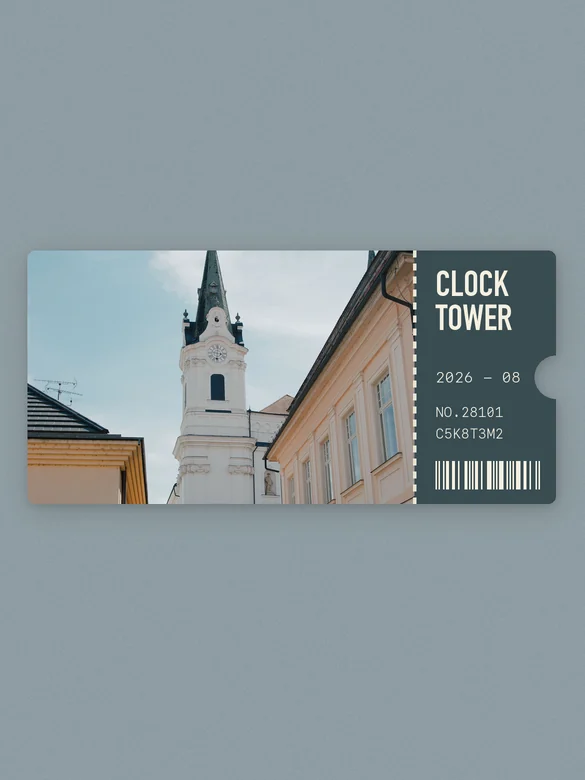
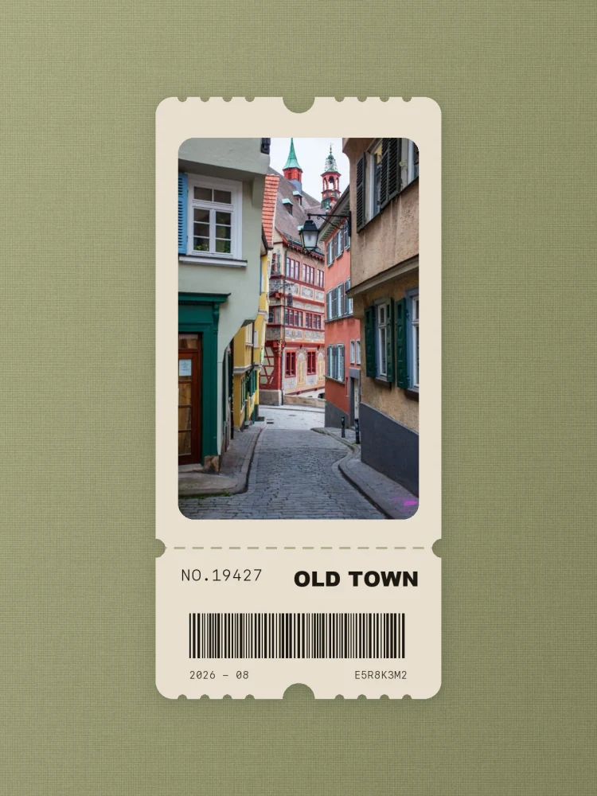

LANDSCAPE · DEFAULT原有横版票根
适合横向场景、合影与建筑全景；默认使用照片主色细腻哑光纸纹。
参考案例 / REFERENCE CASES
这里放入真实票根成品，按原始 3:4 比例轮播展示。现在既有横向照片票根，也有竖向照片收藏票根；两种构图都能继续组合 12 种背景。
两种构图 / TWO LAYOUTS
排版与背景彼此独立：先按照片方向选择横版或竖版，再使用默认背景、照片主色、统一色系或任意一种背景风格。

LANDSCAPE · DEFAULT适合横向场景、合影与建筑全景；默认使用照片主色细腻哑光纸纹。

PORTRAIT · NEW适合竖向街景、建筑和人像；默认使用橄榄绿亚麻、暖象牙票纸与近黑油墨。
能做什么 / WHAT IT DOES
横版默认跟随照片主色，竖版默认使用参考图的橄榄绿自然亚麻与暖象牙票纸；两种构图都支持下方 12 种背景风格。
点击任意效果查看完整规格；图片始终按原始 3:4 比例展示，不拉伸、不裁边。
正在载入风格…
把这张图片做成票根。
横版保留“照片在左、信息在右”；竖版采用“照片在上、信息与大条码在下”。背景选择不会改变票根几何。
竖版默认锁定灰橄榄绿背景、暖象牙票纸和近黑文字，避免照片取色把票根变成沉重的深色卡片。
约 4–5px 的轻微不等距纱线带有高光、暗槽与自然起伏，不使用机械重复的电子网格。
照片主色、用户指定色、统一色系和 12 种材质/光线背景都能与横版或竖版自由组合。